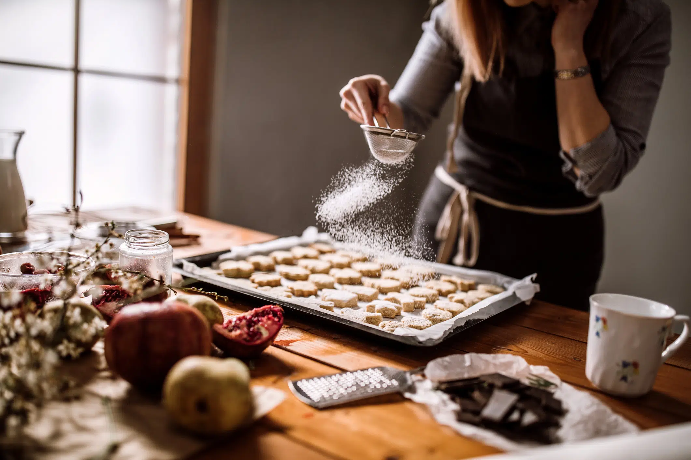

ACERCA DE MI
¡Hola a todxs! Mi nombre es Juli, este es mi segundo emprendimiento y les voy a contar de mi fanatismo por emprender. Hace ya algún tiempo que cuento con un recetario de recetas súper ricas y saludables, las cuales vengo probando y perfeccionando desde hace bastante tiempo. Y se me ocurrió que ya es hora de que haga circular estas dulzuras. Mi paladar se inclina hacia lo dulce, es así que verán en su gran mayoría recetas dulces.
Todo lo que encuentren en está página está 100% chequeado por mi, los paladares de mi familia y amigos/as. Es asi que les doy la BIENVENIDA a Pausa Saludable, un lugar en donde podrán comprar comida rica y saludable. ¡Bon appetit!
¡Info importante!
Todos los ingredientes son cuidadosamente seleccionados. Trabajamos con productos de primera calidad: harinas integrales con alto contenido de fibra, bebidas y aceites de origen vegetal y endulzantes naturales y orgánicos. Algunos de nuestros productos son aptos para personas vegetarianas y/o veganas. Y todas nuestras recetas tienen el más rico y cuidadoso sabor casero hechos con alimentos reales y de alta calidad nutricional.